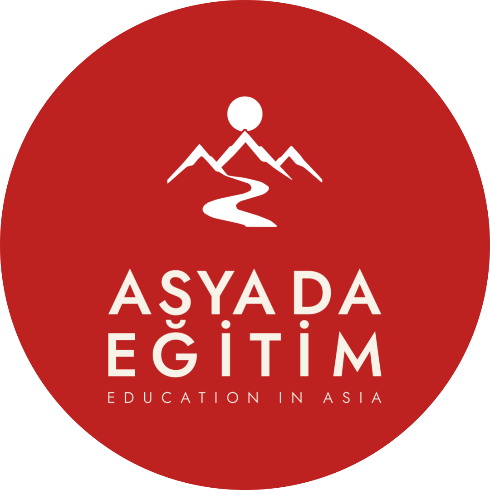
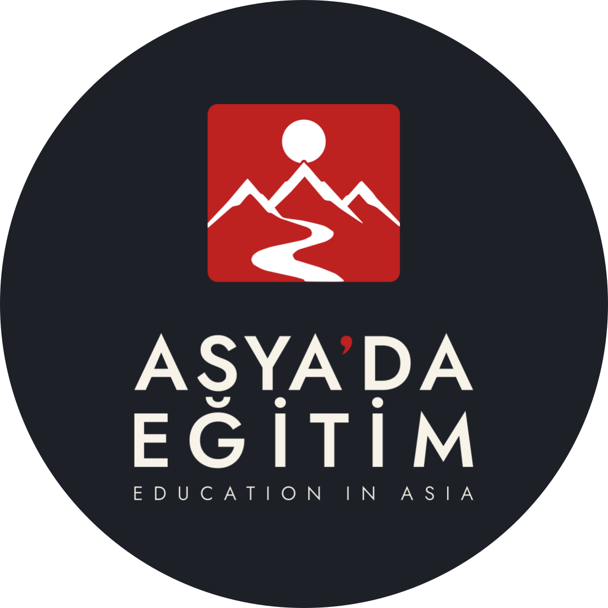
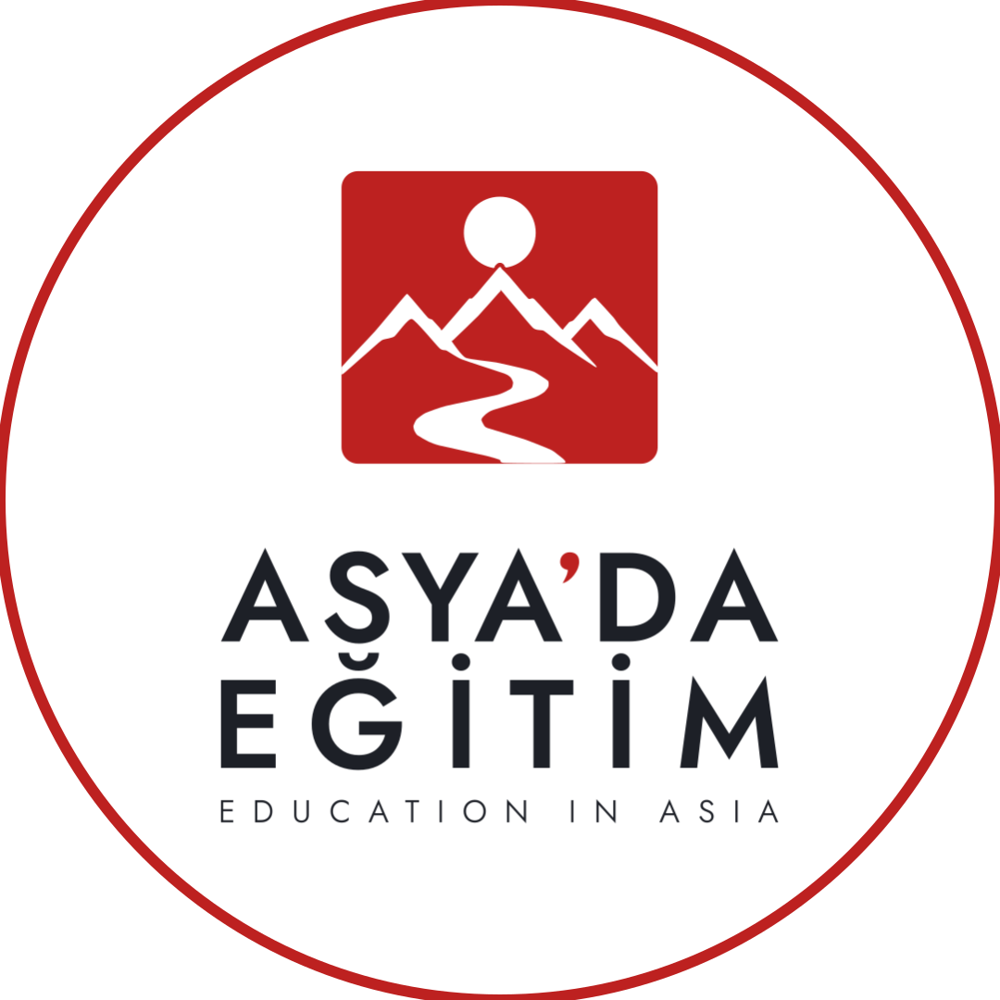
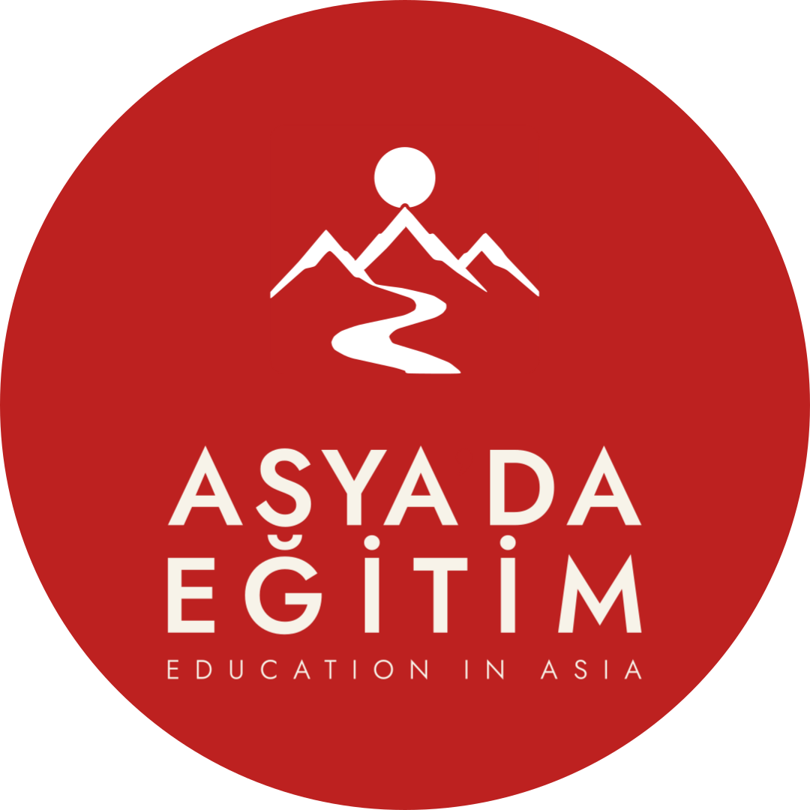
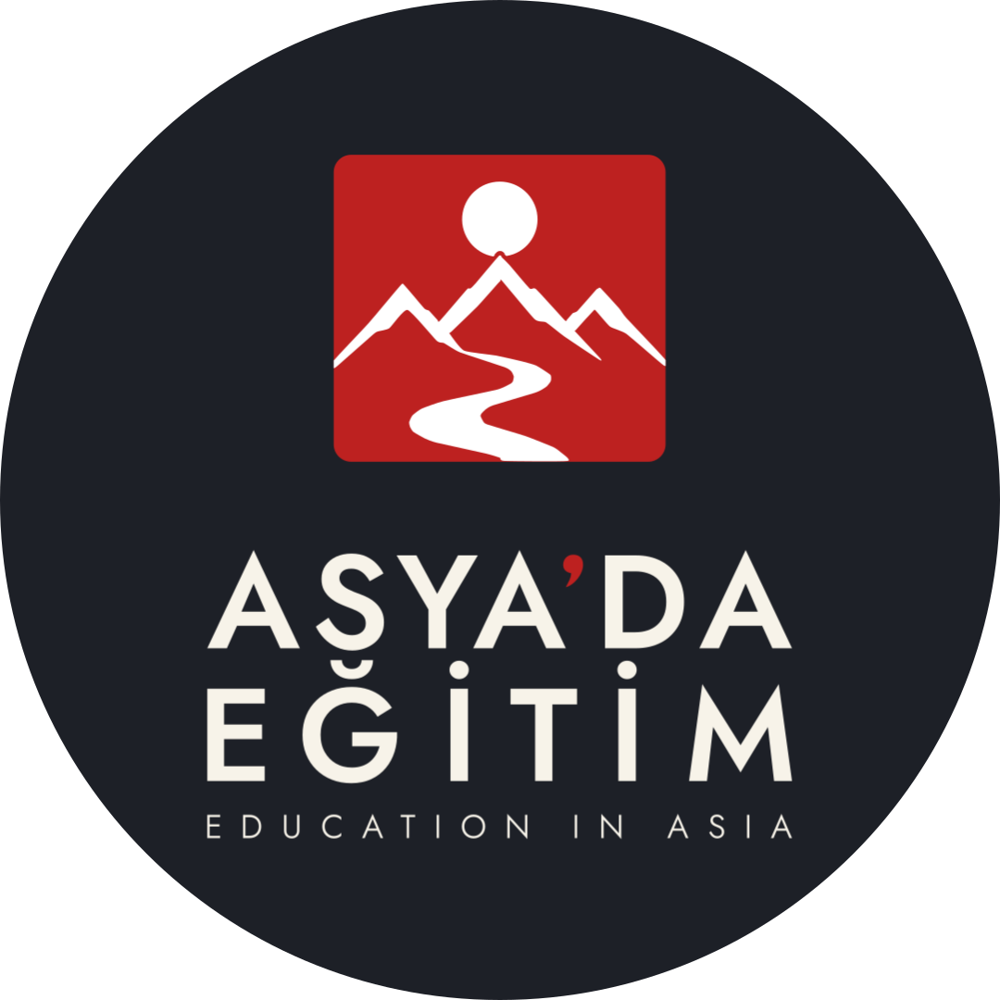
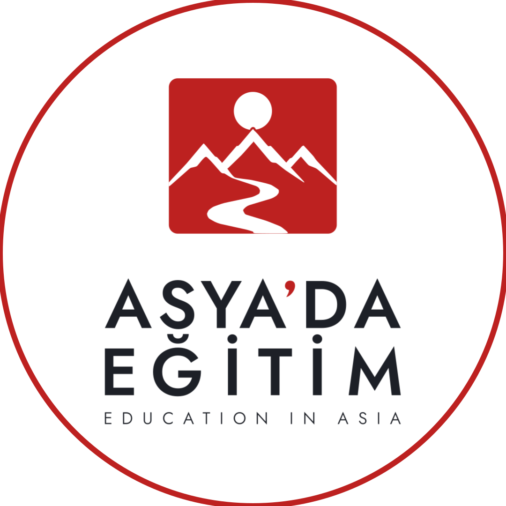
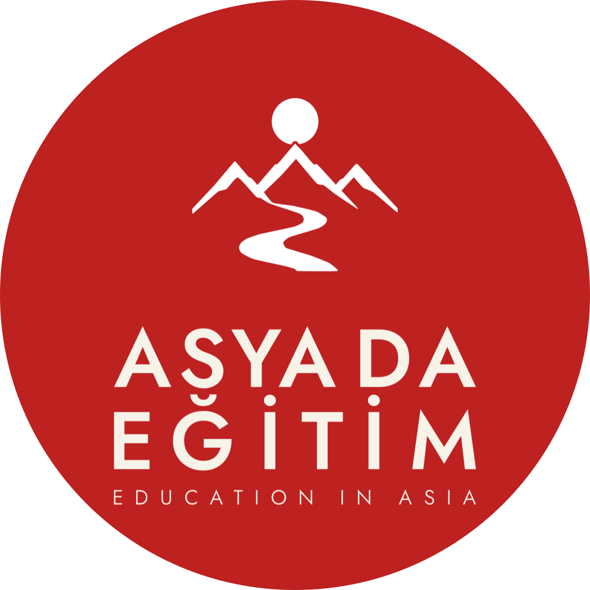
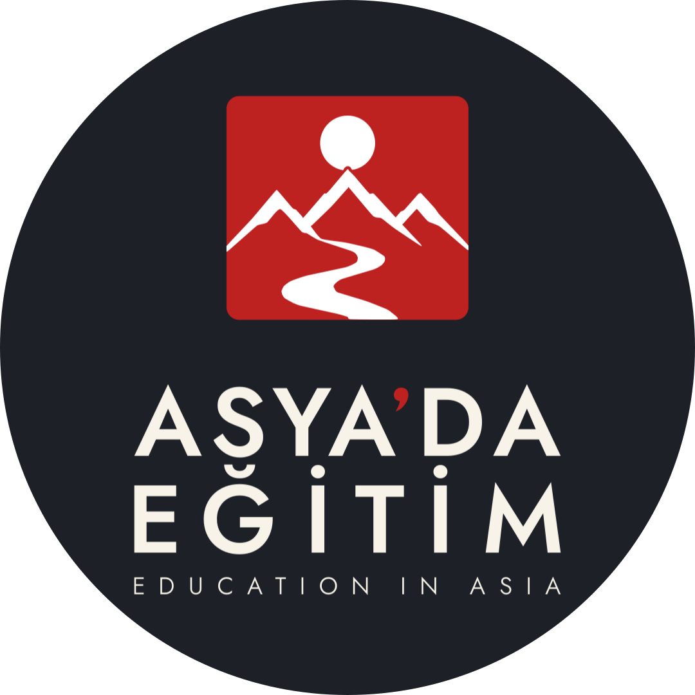
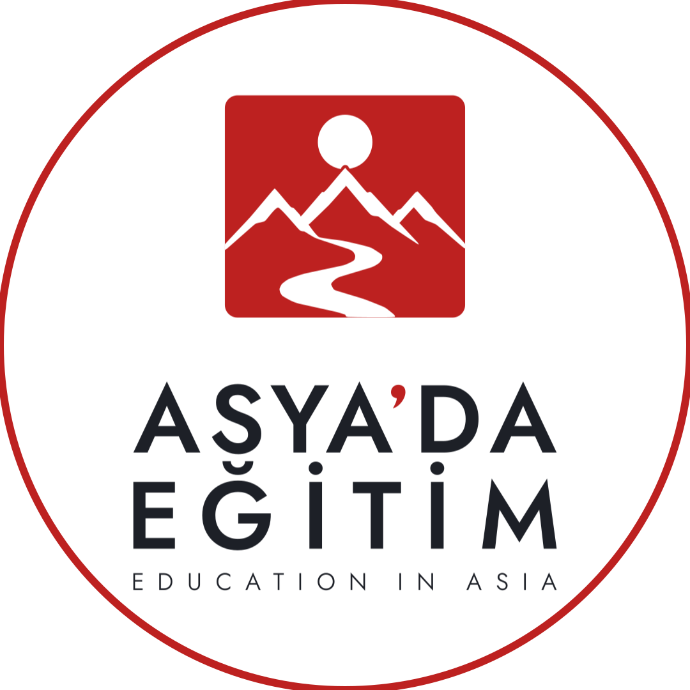

Tam kırmızı
Full kırmızı zemin; onaylı F-05 dark lockup. Beyaz sembol ve yazı öne çıkar.
Yuvarlak profil kırpımı için hazırlanmış dairesel amblem: tam taşmalı kırmızı zemin, mevcut mühürden alınan beyaz güneş, dağ ve yol.
TASARIM ADAYI · CANONICAL SETE EKLENMEDİ
Mühürün marka adına göre daha büyük olduğu onaylı F-05 lockup’ı kullanıldı; marka adının harf biçimleri ve tipografik düzen aynı kaldı. Tam lockup yalnızca orantılı olarak ölçeklenip daire içine yerleştirildi.

Full kırmızı zemin; onaylı F-05 dark lockup. Beyaz sembol ve yazı öne çıkar.

Koyu zemin; kırmızı mühür ve açık tipografi yüksek kontrastla ayrışır.

Beyaz zemin; kırmızı mühür ve koyu tipografiyle sade, aydınlık seçenek.
Aynı üç zemin, aynı F-05 çizimi ve aynı tipografi. Lockup bütünü orantılı biçimde %5 büyütüldü; mevcut ölçüdeki üçlü de korundu.

Full kırmızı zemin; lockup %5 daha büyük.

Koyu zemin; lockup %5 daha büyük.

Beyaz zemin; lockup %5 daha büyük.
İlk üçlüye göre %10 büyük alternatif. Önceki iki üçlü aynen korunmuştur.

Full kırmızı zemin; başlangıç setine göre lockup %10 daha büyük.

Koyu zemin; başlangıç setine göre lockup %10 daha büyük.

Beyaz zemin; başlangıç setine göre lockup %10 daha büyük.
Varyasyonlar tasarım adayıdır, canonical sete henüz eklenmedi. F-05/light ve F-05/dark SVG’leri değiştirilmeden kullanıldı; mevcut kilitli set aynı kaldı.
Not: Bu sayfa ve indirme dosyaları kullanım adayıdır. Mevcut kilitli logo ve canonical lockup ailesi değiştirilmemiştir.